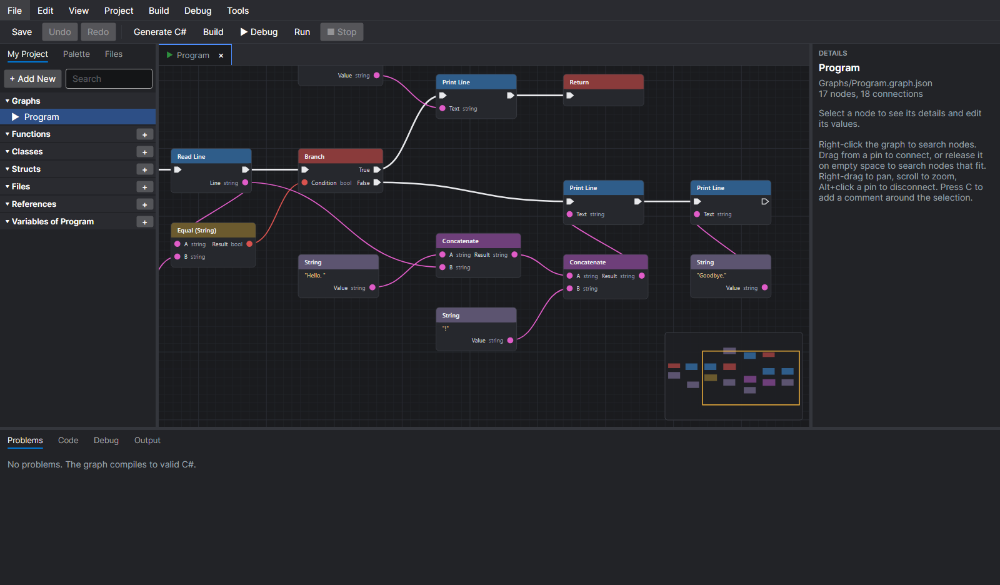
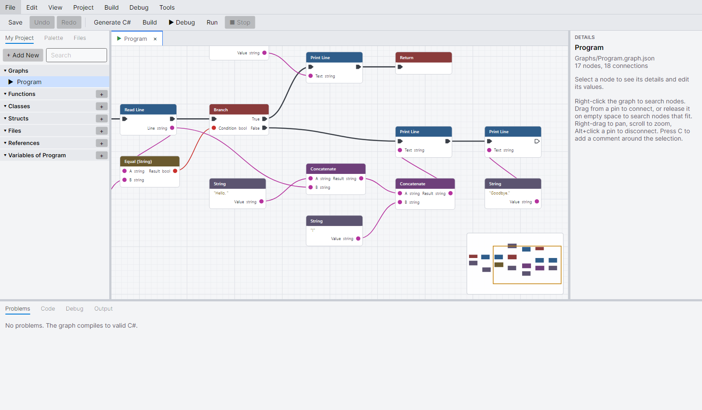
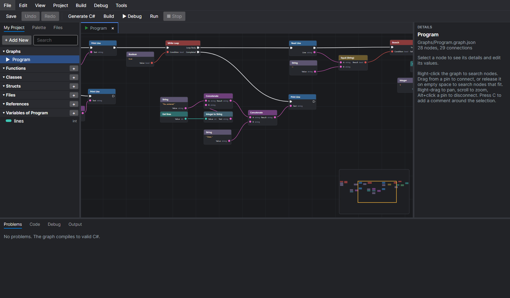
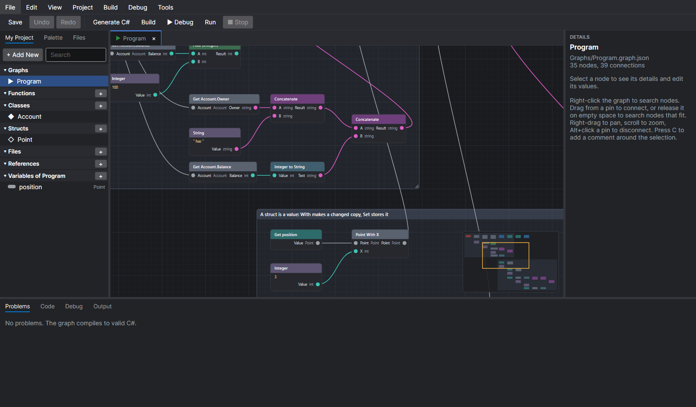
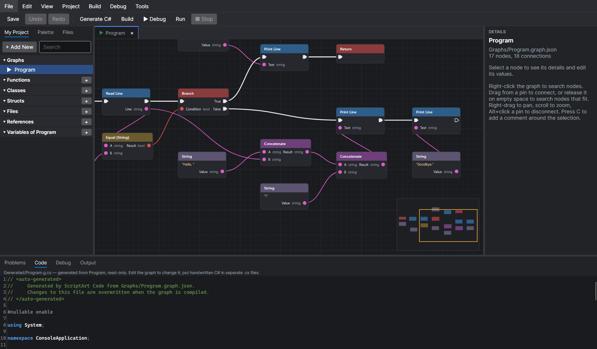

Loops, variables, and branches
Build with For and While loops, Branch, Break and Continue. Release a wire on empty space to pick from only the nodes that fit.
The minimap keeps big graphs easy to move around.
A visual programming IDE for .NET 10. Connect nodes on a canvas, and a real compiler turns them into clean, readable C# that you own.
Free and open source (MIT). Per-user install, no admin rights needed.


dotnet build→
Your standalone app
No interpreter and no runtime library. Your graphs become ordinary C# that any .NET developer can read, review, and build.
Every step of your program is a node, every value a colored wire. Types have colors, so a string never plugs into a number by mistake.
Graphs compile to C# with if, loops, classes, generics, and async. Open the result in any .NET editor.
Live checks flag mistakes on the node itself, undo is unlimited, autosave keeps recovery copies, and nothing is written until you have seen the diff.
Build with For and While loops, Branch, Break and Continue. Release a wire on empty space to pick from only the nodes that fit.
The minimap keeps big graphs easy to move around.

Add your own types in My Project, give them properties, methods, and constructors, and use them as nodes.
Comments group related nodes and explain what they do.

The Code tab shows the generated C# as you edit, mapped back to the nodes it came from. It is the same code that ships.

The graph at the top of this page becomes exactly this. No generated noise, no helper library.
internal static class Program { public static void Main() { Console.WriteLine("What is your name?"); string line = Console.ReadLine() ?? ""; if (line == "") { Console.WriteLine("You did not enter a name."); return; } Console.WriteLine("Hello, " + line + "!"); Console.WriteLine("Goodbye."); } }
The building blocks of C#, the whole .NET library, and an IDE around them.
vside CLI for generate, diff, build, run, and migrate; node libraries loaded only after you approve them.The IDE starts without a .NET install. To build and run your programs, install the .NET 10 SDK.
Installer for x64. Installs for your user, no admin rights, with a Start-menu entry. A portable zip is on the release page.
Download Setup.exeBuilds are not code-signed yet, so Windows SmartScreen ("More info" → "Run anyway") and macOS Gatekeeper may ask for confirmation the first time. All files: releases.
print, add Print Line.Hello!.